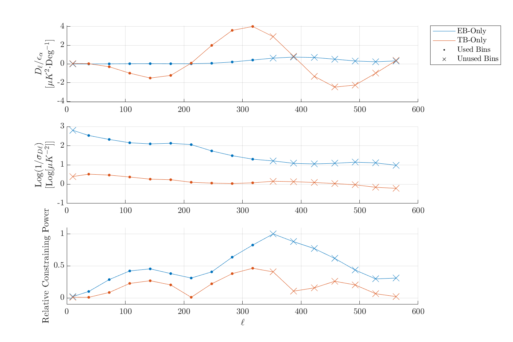

In a previous posting , I characterized the uncertainty in global polarization estimates for BICEP3 B2018 sims which are expected to have a mean angle of 0°. This is a follow-up to that posting which now includes fits to the B18 3-year dataset and I compare angle fits to B18 to B2018.
I find that the EB+TB fits are still greater than EB-only which implies that there was something wrong in the fitting function reduc_global_rotation. I show that this arose from not using all of the covariances between EB and TB in the Band Power Covariance Matrix (BPCM).
I then create a linear estimator for our angles which will be compared to our χ2-estimator reduc_global_rotation throughout the analysis. I show that the linear estimator successfully reproduces angle estimates given from our χ2-estimator for B18 Lensed-Signal+Noise+Dust sims.
Lastly, I show that both the BB-powers and angle variance of individual signals add linearly to the BB-powers and angle variances of the signal coadds. I find a simple scaling relation between BB-power and σα2 to create forecasts of angle uncertainties for scenarios such 50%-delensing of BB or acquiring a rough estimate of how many more observing years we would need until we are no longer noise-dominated.
Matrix purifying B18 Sims
I've now included B18 into these pagers. I am also now crossing Unlensed LCDM T&E with B of Dust-only and Noise-only signal types so that our angle estimates for these signal types are comparable to the ones with CMB already in them.
These spectra can be seen in the "cmb x noise/dust" option where EB, TB, and BB are all now ECMB×BNoise/Dust , TCMB×BNoise/Dust , BCMB×BNoise/Dust respectively.
B18 - the ensemble of 499 B18 sims created for the BK18 analysis (i.e. sernum: 3553, daughter: fgh)
B2018 - the ensemble of 499 B2018 sims created for the BK18 analysis (i.e. sernum: 3553, daughter: h)
B2018-rerun - An ensemble of 10 B2018 sims I ran myself (sernum: 6600, daughter: h).
A pager of EB/TB APS of my 10 sims compared to the 499 sims generated for B2018. The gray lines indicate one realization and the black line indicates the mean of all realizations per-ell.
I see a ~20% reduction in the B18 and B2018 matrix-purified Unlensed-LCDM BB spectra. Below I show the angle estimates now including crosses of Type-8 (L-LCDM+N+D) T and E with each signal type's B. As in my previous posting, I fit angles using only our standard ℓ-bins of 2 through 10 (out of 17).
Histograms of α estimates for B2018 and my B2018-rerun for each EB/TB fit type; per signal type; and with and without matrix purification.
Switching between B18 and B2018 for any signal type which has noise, we can qualitatively see that integrating over three years versus one reduces the σα as expected. Quantitatively though, we can calculate the effective number of additional years we integrated over by taking the ratio of the variances on α:
The Nyears~2.6 for Noise-only which is close to what I get when I compare the B2018 survey weight to B18 according to the CMB Pol Expt Comparison Sheet which is 552836/219441 = 2.52.
We can also see that for B18, the means of the angles are still large compared to the error-on-the-mean, which disfavors the hypothesis in which the deviations were due to systematics resulting from using the B18 matrix on the B2018 subset. The next step is to test the other hypothesis where these deviations are due to the fact that we're using constrained T-maps.
Plots of the Mean divided the error on the mean as a function of each signal for cases with and without matrix purification.
Looking into the Covariance Matrix
In Fig. 1.2 above, we see that the $\siga$ in the EB+TB fit is greater than $\siga$ from just EB-only. In the best case, EB and TB are perfectly uncorrelated and $\siga$ from from EB+TB is $\left(1/\sigasq {}^{EB}+1/\sigasq {}^{TB}\right)^{-\frac{1}{2}}$. Even if EB and TB exactly correlated and TB contributed no additional information then $\siga$ in the EB+TB fit would be equal to EB-only in the worst case and never greater than EB-only. So something must be wrong with the fitter when fitting EB and TB together.
Quoted from Justin's posting :
As summarized in Kaufman et.
al. (2013), we can modify a given input spectrum to include a
uniform rotation of the CMB signal:
We can then difference model expectation values \(\rCb^{XY}\) from the
real bandpowers \(\oCb^{XY}\) (where the subscript \(b\) denotes binned
bandpowers over a range in \(\ell\)) and calculate the \(χ^2\) values
making use of the bandpower covariance matrix \(\Ccov^{XY}\) for a
given cross-spectrum \(XY\):
First, since the code also allows for estimating α with EB+TB, I had assumed the above equation would be extended in such a way which considers the TBEB and EBTB cross-covariance in the full bandpower covariance matrix.
If we use $\Ccov$ to describe the full bandpower covariance matrix between EB and TB with submatrices $\Ccov^{XY}$, I expected the covariance in the estimator to look like
which would be taken directly from the final file's given bandpower covariance matrix (see the figure below for the EB, TB and EBTB blocks of the BPCM).
Instead, the the code recalculates the bandpower covariance for just TBTB and EBEB doesn't actually include the cross-covariance between the two:
\begin{equation}
\Ccov =
\begin{bmatrix}
\Ccov^{TBTB} & O \\
O & \Ccov^{EBEB} \\
\end{bmatrix}
\end{equation}
Second, like our actual BPCM, the covariance matrix above is calculated from the final file's final.r.sim variable which are the 499 noise-debiased Type-7 sims (i.e. Lensed-LCDM+Noise-mean(Noise)).
I re-fit alpha to the B18 Lensed-LCDM+Noise+Dust sims now using the full bandpower covariance matrix calculated from the 499 Lensed-LCDM+Noise+Dust realizations. To show the effects of only changing one thing at a time, in the pager below, the first "Full Cov." option uses the full, original covariance matrix (Noise-debiased L-LCDM+Noise). The "Full Cov. from Type 8" option uses the full covariance matrix recalculated from L-LDCM+Noise+Dust.
Going from 'Original' to 'Full Cov.' we can see that EB-Only and TB-Only distributions stay the same as expected. The scatter on EB+TB does seem to improve, but it is still worse than EB-only, implying that something is still wrong here. Going from 'Full Cov.' to 'Full Cov. from Type 8', we can see the EB+TB drop to just below the EB-Only fit. This could imply that the covariances are being properly accounted for but perhaps that TB doesn't contribute any additional constraining power when included.
This really drives home the importance of using the correct bandpower covariance matrix...
Angles from Pseudosims
Pseudosims from Cholesky Decomposition
While no longer larger than EB-only, the $\siga$ of the EB+TB fits still aren't better than EB as we'd naively expect -- it seems weird that TB contains exactly zero additional information as these fits seem to suggest. The next thing I wanted to do was to try to determine if $\siga$ on EB+TB remain the same for simulations with covariances different from the ones in our current simsets. However, creating new sims from the pipeline is tedious, so I opted to create "pseudosims" of EB/TB bandpowers with arbitrary sample variance via Cholesky decomposition.
Cholesky Decomposition is the decomposition of a matrix into the product of another matrix with itself (i.e. a sort of analog to taking the square-root of a matrix):
\begin{equation}
\text{Chol}\left(\mathbf{M}\right) = \choll\choll^T
\end{equation}
For given covariance matrix $\Ccov$, we can show that multiplying the Cholesky matrix $\choll$ by a set of uncorrelated random variables $\BX$ creates correlated random variables that also have a covariance matrix of $\Ccov$.
We create a Cholesky matrix from our covariance matrix $\text{Chol}\left(\Ccov\right) = \choll\choll^T$ and we can define our newly generated correlated random numbers $\BY$ as
\begin{equation}
\BY=\choll\BX
\end{equation}
Where $\BX$ is uncorrelated random variables with a covariance matrix equal to the identity matrix $\BI$. The covariance matrix of $\BY$ is given by the expectation value $\BBE$ of $\BY\BY^T$ (assuming mean-zero for simplicity):
For non-mean-zero distributions, we carry around some extra terms, but the answer is still the same.
For the purpose of this posting, I create Cholesky matrices using Matlab's built-in chol.m function which makes creating millions of pseudosims with whatever covariance matrix I want within seconds.
The figure below shows the EB/TB BPCM calculated from B18's 499 Type 8 Lensed-Signal+Noise+Dust sims and compares it to the covariance matrix calculated from 10 million pseudosims created from the B18 Type 8 BPCM (i.e. Comparing $\Ccov$ to $\text{cov}(\BY)$).
Left: EB/TB blocks of the bandpower covariance matrix of the 499 B18 Lensed-LCDM+Noise+Dust sims.
Middle: BPCM calculated from 10 million pseudosims which were constructed from the B18 BPCM.
Right: The fractional difference of the two matrices,
$(\Ccov_{B18}-\Ccov{pseudo})/\Ccov_{B18}$
Note: Some "pixels" of the BPCM are negative, so to show the plots in logspace, I plotted the absolute value of the BPCM (and fractional difference) instead.
The covariances of the reconstructed BPCM have a fractional difference of <1% for most bins within one or two bins next to the diagonals.
Fitting Angles to Pseudosims
Next, I fit angles to pseudosims of mean-zero EB and TB spectra for different cases of covariance matrices. Each case includes 499 sims in order to be directly comparable to the distributions from our standard 499 sims (included in the pager below). The estimator includes the fix described above where we use the full BPCM's.
Cases:
B18 Pseudosims: pseudosims from the B18 L-LCDM+Noise+Dust BPCM for a direct comparison.
No EBTB Cov: Given that including the EBTB and TBEB blocks seemed to improve things in the first section, I also create sims where the EBTB and TBEB blocks are zeroed out but the EBEB and TBTB covariances are the same as the B18 covariance matrix.
Abs B18 Cov: Pseudosims constructed from the absolute value of the entire B18 BPCM (the EBTB/TBEB blocks are not zeroed).
The pager above is mostly to show that the distributions look nominal compared to the B18 Type-8 distribution. Because we're only using 499 sims, we expect the uncertainty on $\siga$ to be around 3% of the parent distribution (see § 3.2 of ) and the $\siga$ of the B18 pseudosims match that of the B18 standard within that threshold. The table below compares $\siga$ of the EB, TB and EB+TB fits among the various cases with the Naive EB column showing what we would expect is EB and TB were perfectly uncorrelated.
σα [Deg]
Case
EB
TB
EB+TB
Naive EB+TB
B18 Standard
0.0747
0.1412
0.0746
0.0660
B18 Pseudo
0.0752
0.1423
0.0744
0.0665
No EBTB Cov
0.0729
0.1422
0.0645
0.0648
Abs B18 Cov
0.0743
0.1386
0.0644
0.0655
This is telling us is that
B18 Pseudo: The issue with EB+TB fits is reproducible with pseudosims.
No EBTB Cov: That we now see such a large improvement in the EB+TB fit, this confirms that the covariance in the EBTB/TBEB blocks is such that any additional information from TB is effectively being ignored.
Abs B18 Cov: Specifically, the fact that we have negative covariances are to blame for this, since we see an improvement on EB+TB $\siga$ when we use covariances of the same amplitude that are made positive.
It's not clear to me why having negative EBTB covariance would have such an impact on the fit. Intuitively, I think $\siga$ should be the same regardless of the sign of the covariance, shouldn't it?
Constraining power vs. ℓ
We want to look at the constraining power per-ℓ between the EB and TB spectra (i.e. determine which bandpowers contribute most to α considering both the model and our bandpower uncertainties).
We currently only use our canonical science bins (bins 2 through 10) and this exercise will be useful in determining if we might want to include higher bins in the analysis as well.
For some arbitrarily small input angle εα, we get some spectra out of our model, Cb. Because εα is small and the small angle approximation applies, the shape of Cb should be constant and only linearly scale by α. Thus we normalize the shape of the model spectra by dividing Cb by εalpha -- in the case of uniform weighting, this alone would tell us which bandpowers contribute most to the contraints on α with the higher values of Cb/εalpha possessing higher constraining power. However, this doesn't consider the uncertainties on the bandpowers themselves, so we weight the Cb/εalpha by the inverse of the bandpower sample variance which we get from sims.
In application, I calculate the EB and TB expectation values using reduc_global_rotation's subfunction pol_rot_theory_model using our fiducial input model from B18's final file with an input angle of 0.001° -- this angle is arbitrary as it could be any value as long as it satisfies the small-angle approximation. I divide the expectation values by the input angle and then divide the model spectra by the per-bandpower standard deviation of B18's 499 Lensed-LCDM+Noise+Dust EB and TB sims . In the plot below, take the absolute value since TB can be negative and I peak normalize to show the relative constraining power in EB and TB.

Top Model EB and TB bandpowers for some arbitrary input angle, normalized by the input angle. Middle Log-Y plot of the inverse variance of the spectra per-bandpower. Bottom Relative constraining power of EB and TB spectra (multiplying the top plot by the middle plot and peak normalizing). Higher values indicate higher constraining power. The dots are bins that are normally used during our global rotation analysis of real CMB data and X's are bins that are not normally used.
There are a couple of points to note from the plot above:
We can see that in the top plot that TB would have more constraining power in EB, but this is countered by the fact that TB has much higher sample variance compared to EB.
Most of our constraining power for EB is in the ℓ-range of ~270 to 450, only two bins of which we are actually using.
For TB, most constraining power comes from the ℓ-range of ~250 to 350, bracketed by the ℓ values where the TB signal pivots around zero, but it still less than half as good as EB.
In his posting, Justin explored the benefits of including higher ℓ-ranges and the plot above provides a good argument for looking into doing that again for this analysis.
Angle Linear Estimator
We want to create a linear estimator that we can compare throughout the analysis which would provide a nice (and fast) consistency check between the two estimators.
Creating a Linear Estimator
We can linearize a function by Taylor-expansion around zero (in matrix form)
Assuming the above is linear for small values of α (which should be true given the small-angle approximation), we can create a linear estimator, $\hat{\alpha}_{lin}$, in which α is the dot product between the our array of bandpowers $C_{b}^{XY}$ and some vector that contains the information how each bandpower contributes to α
We want our linear estimator to consider all of the information contained in the BPCM, so I calculate $\partial\alpha\,/\,\partial C_{b}^{XY}$ by injecting a quasi-delta function -- i.e. setting a bandpower to some fixed amplitude whilst keeping all other bandpowers at zero -- into an EB or TB spectra ℓbin-by-ℓbin, recording the resulting alpha estimates from the χ2-estimator (see below figure for example). I fit angles to these fake spectra using the same procedure outlined in where, I substitute the real data in B18's final file for these fake spectra and then pass that final file through reduc_global_rotation.m. Because I want to compare to B18 Lensed-LCDM+Noise+Dust, I use B18's the BPCM calculated from those 499 realizations.
For the EB+TB fits, I inject the delta function into EB and the TB sequentially while telling reduc_global_rotation.m to fit both spectra at once. This not only uses the EBEB and TBTB covariances, but also uses the EBTB covariance from the BPCM as well.
The figure below shows resulting alphas for four different amplitudes of our quasi-delta function. Through my analysis so far, I have been using our standard ℓ-bins 2-10 but I now also include a case for using ℓ-bins 2-15. We get $\partial\alpha\,/\,\partial C_{b}^{XY}$ be simply dividing the output array of alphas by in input amplitude of the bandpower (i.e. the line in the left plot of the below fig divided by Dl in the legend which is show on the right plots).
Exploring the effect on α for input delta functions for EB (Top Row) and TB (Bottom
Row). Left Column Resulting α estimate per bandpower as a function of Ell, the lines are color coded by the amplitude of the quasi-delta function used in the given spectra. (Right Column) The angle at each bandpower is divided by the bandpower itself which creates the linear estimator. Since all four cases overlap, this is also a proof of linearity for this range of bandpowers.
Comparing α estimates
The below pager shows the angles from the linear estimator (applying Eq. \ref{linest}) compared to those derived from our standard chi-squared estimator $\hat{\alpha}_{\chi}$.
Each dot represents a single realization from B18. α along the y-axis is calculated by taking the dot product of dα/dDℓ with their respective band powers for each realization.
We can see that the angles from $\hat{\alpha}_{lin}$ are nearly exact compared to $\hat{\alpha}_{\chi}$.
Comparing uncertainty estimates
I determine σα by taking the dot product of $\partial\alpha\,/\,\partial C_{b}^{XY}$ and the standard deviation per-bandpower across all sims in the B18 simset.
\begin{equation}
\sigma_{\alpha} = \frac{\partial\alpha}{\partial C_{b}^{XY}} \cdot \text{SDEV}\left(\hat{C}_{b}^{XY}\right)
\end{equation}
Left plots show the contribution of σα per-bandpower for EB and TB from the linear estimator. The right plot compares the σα between the linear and chi-squared estimator.
The estimation of σα we get from the linear estimator is within a few percent of those given by the χ2 estimator (which are given by the standard deviation of the distributions of α).
Forecasting Angle Uncertainty from BB power
In this section, we look into a simple forecasting technique that we can use to provide an educated guess on our limits on an IPR constraint in future analysis.
i.e. predicting a $\siga$ givin some reduction in BB power in either lensing signal, noise, or dust.
For context, this exercise is mostly to provide the foundation on a discussion of future analyses in our paper.
In § 3, we found that including higher ℓ-bins might be in our best interest. For the exercise below, I'm keeping the bin range at our default 2 through 10 and we can revisit this if we change our minds later.
We can show that the variance on α of the individual signal types add linearly to the variance of angles of the coadded signals. The same can be shown for that of BB power. The table below shows the variance from each fit-type and BB power for each signal type. In the middle and bottom sets of rows (i.e. the σ2-rows), I compare the sum of the variances of the individual signal types to the variance of the coadded spectra of those signal types. We can see pretty clearly that the sum of the variances is equal to the variance of the coadded spectra to <5% for TB and <1% for EB, EB+TB, and BB-power.
Signal
EB
TB
EB+TB
BBmean
σα2 [Deg2]
[μK2]
Lensed-LCDM
0.0026
0.0094
0.0026
0.0109
Noise
0.0027
0.0110
0.0027
0.0167
Dust
0.0003
0.0009
0.0003
0.0007
σ2L+σ2N
0.0053
0.0204
0.0053
0.0276
σ2L+N
0.0053
0.0194
0.0053
0.0276
σ2L+σ2N+σ2D
0.0056
0.0213
0.0056
0.0284
σ2L+N+D
0.0056
0.0199
0.0056
0.0283
Because both add linearly, we can derive a simple scaling relation between $\sigasq$ and mean BB power which can then be used to estimate a $\sigasq$ for changes in BB power of a given signal type. The first scenario we consider is delensing, where we are able to reduce the BB power from the lensing signal by a flat 50% across all ℓ-bins. The second is the reduction in noise by incorporating data through 2022 -- B18 has effectively 2.5 years of data and I assume that B2019 through B2022 are just as good as B2018. The last I consider is just combining both B22 with a 50% delensing.
The table below shows these scenarios for L-LCDM+N+D, EB-only fits again assuming we use only bins 2 through 10. For easy comparison, I include the σ2L+N+D from the table above along with a column showing $\siga$.
Signal
EB
BBmean
σα
σα2 [Deg2]
[μK2]
B18 No Delensing
0.0747
0.0056
0.0283
B18+50% Delensing
0.0666
0.0044
0.0229
B22+No Delensing
0.0653
0.0043
0.0220
B22+50% Delensing
0.0568
0.0032
0.0166
We can expect a ~20% reduction in $\siga$ in either case of only delensing or only including more years and a ~25% reduction if we do both.
Conclusions
The issues where $\siga$ in the EB+TB fits were worse than just using EB-only appear to come from not using EBTB and TBEB cross-covariance of the BPCM. Further, I find that the EB+TB $\siga$ are still nearly equal to EB-only when we have negative covariances but see an improvement in EB+TB fits when I substitute the absolute value of the BPCM instead.
Plots of the contraining power vs ℓ-bin suggests that most of our constraining power for α is actually in the upper half of our ℓ-range and that we can improve $\siga$ by up to 30% by including ℓ-bins from 11 to 15.
I have created a created a linear estimator derived from our χ-squared estimator that is capable of producing nearly identical fits on α. This estimator will be used as a cross-check throughout the rest of the analysis.
I also find that, because both $\sigasq$ and BB-power both add linearly, we can establish a simple scaling relationship between the two which can provide rudimentary estimates on the sample variance of future analyses where we've reduced the BB power by e.g. delensing, including more years, etc...